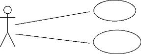
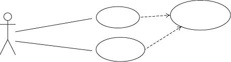
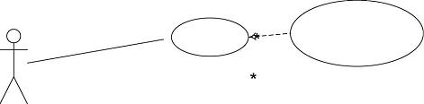
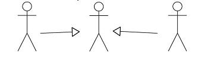

Розробка варіантів використання (UML), робота з бізнес правилами.
Діаграма варіантів використання UML, Use Case Diagram - одне з найпростіших представлень системи. Її базові «будівельні елементи» - актори і варіанти використання. Діаграма задумана так, щоб дати найбільш загальне уявлення про функціональність системи(її компоненти), не вдаючись до деталей взаємозв'язків функцій. Тому основний вид відношення, використовуваний в діаграмі -ассоциация між актором і варіантом використання.

Рис.1 Діграма варіантів використання
Інші види стосунків - відношення включення(include), розширення(extend) і узагальнення/генералізації.
Включення служить для позначення підпорядкованих варіантів використання(коли один або більше за варіанти використання містять виклики однієї і тієї ж функціональності).

Рис.2 Відношення включення
Розширення в точності відповідає точці розширення, використовуваній при Пр1/ описі варіанту використання, див. матеріали лекції 4.

Рис.3 Відношення розширення
Відношення узагальнення може застосовуватися як до акторів, так і до варіантів використання, з метою вказівки спеціалізації одних відносно інших.

Рис.4 Відношення узагальнення